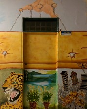

La línea de investigación Pensamiento Crítico, Política y Currículo es un grupo conformado por maestros y estudiantes investigadores de la Licenciatura en Biología de la Universidad Pedagógica Nacional e instituciones asociadas, que se desempeñan en el área de las ciencias naturales, particularmente en la enseñanza de la biología en distintos contextos colombianos, realizando labores de investigación, docencia y extensión; abordando una perspectiva crítica, asumiendo la interacción pedagógica como una acción de cambio hacia nuevas formas de comprender y relacionarse con la naturaleza.
La trayectoria de algunos de sus miembros inicia al interior de la línea interinstitucional Ciencia, Acciones y Creencias desde el año 2004 actualmente avalado en categoría A ante COLCIENCIAS, desarrollando distintos procesos de formación e investigación. En el año 2016 el grupo centra su trabajo en la problematización de los conflictos socio ambientales, las pedagogías críticas en la enseñanza de la biología y las pedagogías de la naturaleza, configurando su actual dinámica adscribiéndose al grupo de investigación Estudios en Enseñanza de la Biología, avalado por Colciencias en la categoría C. Es así como desde enero del 2014 la línea y sus integrantes han apostado por la participación y transformación de la educación en distintos contextos educativos convencionales y no convencionales, como escuelas rurales, museos, fundaciones, ONG’s, Parques Nacionales Naturales, entre otras; fortaleciendo su trabajo con comunidades en distintas regiones del país entre las que se destacan la Amazonía, Sumapaz, Caquetá, Boyacá, Cundinamarca y Meta.
Aporta a la transformación de las acciones pedagógicas desde referentes culturales, políticos, sociales, epistemológicos, filosóficos y metodológicos, haciendo evidente como éstos y las diversas interacciones que emergen en la praxis educativa limitan o favorecen los procesos de cambio necesarios para la comprensión de la naturaleza, como forma de resistencia a los procesos de educación que reproducen los saberes hegemónicos, las prácticas de dominación del otro y la permanencia de formas de exclusión y desigualdad social.
- Contribuir al proyecto político pedagógico para la educación Colombiana propuesto por la Universidad Pedagógica Nacional con el propósito de “promover y desarrollar estrategias de educación que compensen la deuda social y educativa”
- Problematizar las acciones pedagógicas desde referentes culturales, políticos, sociales, epistemológicos, filosóficos y metodológicos, haciendo evidente como éstos y las diversas interacciones que emergen en la praxis educativa limitan o favorecen los procesos de cambio necesarios para la comprensión de la naturaleza.
- Abordar el estudio de las relaciones que configuran los procesos de formación entorno a la Naturaleza, en diversos escenarios aportando a su solución a través de la construcción de propuestas investigativas, pedagógicas y didácticas desde un enfoque crítico.
- Hacer de la práctica pedagógica e investigativa un espacio que permita tejer nuevas relaciones entre el conocimiento y los contextos para la transformación basados en la alteridad y subjetividades que permitan resignificar el lugar de la educación, la pedagogía, el saber sobre la vida y el cuidado de la Naturaleza en Colombia.
-El reconocimiento de los conflictos socio ambientales y el lugar de los maestros y la pedagogía como componentes vitales para la comprensión y transformación de las situaciones y relaciones que ponen en riesgo el mantenimiento de la vida.